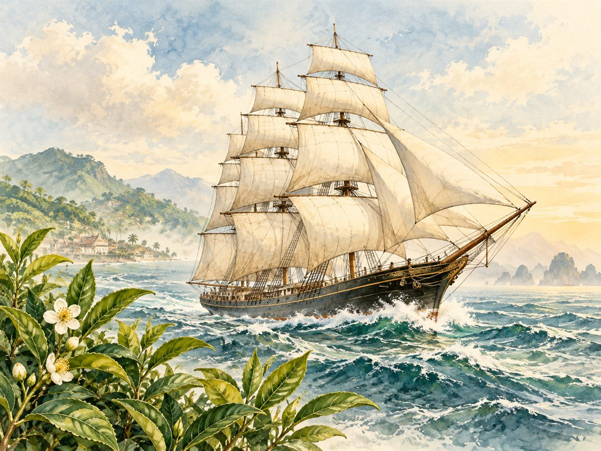
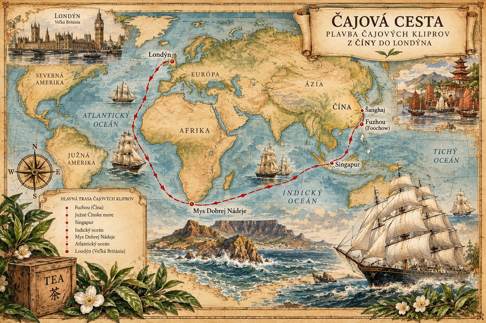
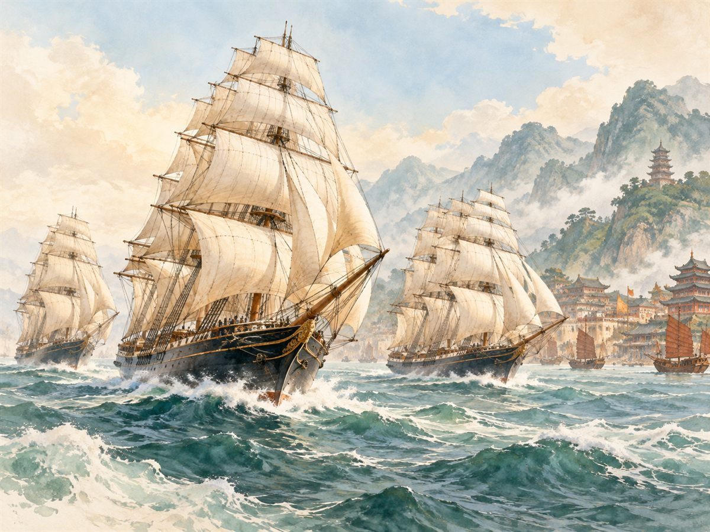

Čajové klipre – preteky plachetníc o prvý čaj
Kedysi nebol najcennejší ten čaj, ktorý bol najlepší, ale ten, ktorý prvý doplával do Londýna. A tak sa cez oceány konali preteky rýchlych plachetníc – kliprov.

Čo je kliper
Kliper (anglicky clipper) bola štíhla a veľmi rýchla plachetnica z 19. storočia. Mala úzky trup a obrovské množstvo plachiet. Jej meno pochádza z anglického slova clip, ktoré kedysi znamenalo aj „rýchlo sa niesť, uháňať“.
Klipre nevozili ťažký a lacný náklad. Vozili to, čo sa oplatilo doviezť čo najrýchlejšie – a medzi takýto tovar patril najmä čaj z Číny.
Slovo clipper sa neskôr ujalo aj inde. V tridsiatych rokoch 20. storočia dala americká letecká spoločnosť Pan Am svojim veľkým lietajúcim člnom meno „Clipper“. Preto si ho niekto dnes spojí skôr s lietadlom či vzducholoďou než s plachetnicou.
Prečo sa s čajom tak ponáhľali
V Anglicku bol čaj z novej úrody veľmi žiadaný. Obchodníci platili za prvý čaj sezóny príplatok a loď, ktorá ho priviezla ako prvá, si odniesla nielen lepšiu cenu, ale aj slávu. O tom, kto vyhrá, sa písalo v novinách a uzatvárali sa stávky.
Cesta bola dlhá: z čínskych prístavov cez Juhočínske more, popri Singapure, cez celý Indický oceán, okolo juhu Afriky a potom hore Atlantickým oceánom až do Londýna.

Veľké čajové preteky v roku 1866
Najslávnejšie preteky sa začali 30. mája 1866 v čínskom prístave Fu-čou. Odtiaľ vyplávalo niekoľko kliprov naložených čerstvým čajom a všetky mierili do Londýna – okolo Afriky, cez pol sveta.

Po 99 dňoch plavby, 6. septembra 1866, dorazili do Londýna dve lode takmer naraz: Ariel a Taeping. Taeping prirazil v prístave asi o dvadsať minút skôr. Tretia loď, Serica, prišla len zhruba hodinu po nich. Výsledok bol taký tesný, že sa majitelia lodí dohodli a o odmenu sa podelili.
Cutty Sark – najznámejší kliper
Dnes najslávnejšou čajovou plachetnicou je Cutty Sark. Na vodu ju spustili 22. novembra 1869 v škótskom Dumbartone. Prišla však na svet v nešťastnej chvíli.
Koniec éry plachetníc
Len päť dní predtým, 17. novembra 1869, otvorili Suezský prieplav. Parníky odvtedy chodili z Ázie do Európy oveľa kratšou cestou, kým plachetnice ním výhodne prejsť nevedeli. Cutty Sark stihla ako čajová loď len osem plavieb do Číny. Potom vozila napríklad vlnu z Austrálie.
Loď sa zachovala dodnes. Stojí v Greenwichi v Londýne ako múzeum a pripomína časy, keď sa o šálku čaju pretekalo cez oceány.
Zdroje
- Great Tea Race of 1866 – Wikipedia (anglicky)
- Cutty Sark – Royal Museums Greenwich (anglicky)
- Our story – Clipper Teas (anglicky)
Text pripravil Claude, spolutvorca stránky.